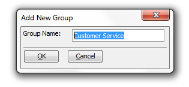
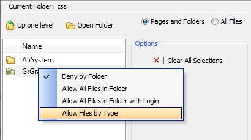

Web Application Security Guide
Table of Contents
Overview
The Web Security Framework easily adds a sophisticated security system to any
web application running on the Alpha Anywhere Application Server. The security system is integrated into the server operation.
When the security framework is turned on, the server automatically checks
every requested page or file for proper security clearance from information
saved in memory. The server checks the page or file permission and will
return the requested file if it is permitted within the security framework
for the project containing the file. If the page or file is not allowed,
the server automatically checks the security configuration to determine
the proper response. This process is repeated for every page and file
request, including images, CSS style sheets, and JavaScript files. If a field on
a component is not available to the user, the Application Server will remove it from the component on the page returned to the
user. If a menu entry is not available to the user, its link will be disabled.
The following picture shows how the security framework categorizes pages,
controls on grid and dialog components, and menu entries. Any page can be in one
of three categories:
-no access permitted
-access without login
-access after login and
appropriate group membership.
Access to menu entries and controls (on any page that requires login)
can further require appropriate group membership.
There are a number of easy to use dialogs available to configure the security
for a project. When a project is initially created there are no security files.
The top menu on the Web Projects Control Panel has a Web Security Button. Open
the Security Settings dialog, where various security options can be assigned. You must have at least one page
defined in the project to build the security settings. The other menu options
are disabled until these security settings have been defined. The Security Settings dialog has many options to configure the web security
or turn it off completely. Some of these options include requiring a password,
configuring user ID and password validations, determining how to respond to an
incorrect login, allowing the user to change their password, user id and
password recovery, and many other options.
After you have defined all desired security parameters, you may build a login
component. After you build the login, you may add it to a page. As with other
components, parameter overrides on the page may modify the component's messages
and style sheet(s). All of the code to validate the user and respond to the
login actions is included within the component. The developer does not have to
add any code to any page to implement security. Since the login page may not
have existed prior to setting the initial security parameters, reopen the
Security Settings dialog and add the login page name to the redirect options
desired. You can open the Users and Groups dialog to define the users and groups. The
fields shown when entering or editing users are determined by the security
parameters selected. Not all possible fields may be shown. The security system
includes an option to activate a special field named 'ulink'. The value entered
in the 'ulink' field can identify a related user record in an external table.
There are options on the dialog to import user information from existing tables
or export security data to an external table. The users, groups, and permissions
tables are defined and controlled by the security system.
The next dialog in the security system is the Page Security dialog The Page
Security option on the Web Security Menu dialog to open the Page Security
dialog. This genie assigns permissions for all pages within the project. Pages
may be always allowed or require a login. If any page requires a login, you must
assign one of more groups to it. Some pages may not have any assess defined. The
server will automatically deny or allow these pages, based on the project's
security configuration. After configuring the page assignments, you may publish
the page security file from the menu or from the Web Projects Control Panel.
After you have defined and published the Security Settings, Login component,
Users and Groups, and Page Security, the security system is ready to go. The
server that contains the published files will automatically check all page and
file requests for proper security clearance. If you make a change is made to any
configuration parameter and republish the security files, the next page request
will automatically use the new settings.
|
Implementing Security
You should following this sequence when implementing the security framework.
1.
Enable the Security
Framework at the Application Server Control Panel
2. Create a page or some pages that users can access.
3. Display the Web Projects Control Panel and click the Web Security button at the top right to display the Web Security Menu dialog.
The button should have a little key image next to it.

4. Select Web Security Configuration and click OK to display the Security Settings dialog. Select the security options that you want
to use.5. Create a Login Component and a Login page.
6. Reselect Web Security Configuration and click OK to display the Security
Settings dialog. Add the name of the login page to the correct redirect settings
7. Return to the Web Security dialog, then select Users and Groups to open
the Web Users and Groups dialog. Create users, create groups, assign user IDs,
passwords, and group membership to your users.
8. If you wish to be able to add users through a web page, create the dialog
component and control. How to add users to a web component is covered in more
detail under Users.
9. Return to the Web Security dialog, then select Page Security to open the
Page and Folder Permissions Dialog. Define which pages are not accessible, which
will be available to all, and which require a login.
10. Return to the Web Security dialog and then select Publish Security Files
to open the Publish dialog and publish you work.
Web Security Configuration
Security Policy
Security active
- If security is not activated, all objects and actions will be available to all users without restriction.
If security is active, the security system is based on membership in a group.
Password Required - Select to require a password as well as a User ID for login. A User ID is always required if security is active.
If you check this box you can set password options under the 'User Id and
Password Options' tab.
Redirect page - login. This is the name of the page to go to if login is required to access a selected page. This would normally be the login page, or a menu or index page.
If you do not have a page designated you can type one in here
Redirect page -
insufficient permission. If a logged in
user does not have permission to access a selected page they will be redirected
to this page. If this page is not specified, they will be redirected to the page
specified for login.
Use Active Directory - Select this option if you want to use
Active Directory for security data on your production server. See "Using Active
Directory" link at the bottom of the dialog for more information.
Note: Checking the
User Active Directory will change the 'Security Table Type' setting to 'Security
Table Type for Development and Testing'. Checking this box will also remove the
'Data Recovery Options' tab from the top of the Security Settings dialog box. It
will truncate the setting options that are available under 'User Id and Password
Options' tab and the 'Customize Options' tab.
Security Table Type for Development and Testing - Select the
data type for storing the web security data that will be used during development
and testing of the application. The production deployment of the application
will use Active Directory for user authentication and authorization. If the type
is changed from 'DBF Files' to 'SQL Database', a genie will open when the
security settings are saved to set the connection to the SQL database and define
the tables to construct. If the type is changed from 'SQL database to 'DBF Files',
a prompt will display on save to confirm the conversion.
|

Selecting Data Type for Storing Security Data
Security Table Type - As long as the 'Use Active Directory'
Setting is not checked this option will remain open. Select the data for storing
the web security data. If the type is changed from 'DBF Files' to 'SQL
Database', a genie will open when the security settings are saved to set the
connection to the SQL database and define the tables construct. If the type is
changed from 'SQL database' to 'DBF Files', a prompt will display on save to
confirm the conversion.
Allow Alternative Login
- The 'Use Active Directory' Setting
must be unchecked to see this option. Allow alternative login bascially allows
the use of an alternative login method to authenticate and login the user; such
as Google. If you click the check box next to this option two more settings
appear below it.
-Automatically Add Authenticated User to Security -
An authenticated user can automatically be added to the system if they do not
already have a security record. In the case where the user's identifier from the
external authentication system does not meet the userId configuration
requirements in the security system, a unique user id will be generated using
the user identifier. If the user information is accepted, they will be logged
into the system when the information is saved.
-After login Event - The ''afterLogin' event fires
after a user has successfully been logged in using an external authentication
method. This event includes variables available after login.
|
Login Options

Login expiration policy - Policy to set the maximum login time
period. All options other than 'Expires when current session expires' require
the use of a cookie. If the user does not have cookies enabled, they will be
logged out when the session expires.
Lockout after failed attempts
- The number of times a user can
try to login unsuccessfully before they are locked out of the application. Set
to 0 to allow unlimited attempts.
Locked out action - The action that should be taken if a user
is locked out of the system.
-'Wait for period of time' will require the user to wait a
specified time until they are allowed to login with the same User ID.
-'Redirect to another page' Will send them to another
page.
-'Lockout user until reset by administrator' will lock out
the User ID until lock is manually released.
Locked out message - Message to show the user during login to
indicate they are locked out of the system.
Locked out wait Time - Click on the box with three dots to the
right and the Expiration Time dialog box will load. This allows you to set the
locked out wait time.
|

Login activity file - When enabled this will save all login
activity to a text file in the specified folder. If you click the checkbox,
three option will appear below the login activity file in the list.
-'Login activity log to save to' - Folder where
activity log file will be saved. Select 'User defined function' to enter your
own code to process log activity data.
The 'Data folder option' does... and the 'Project
Target Folder' does...
-'Login activity include failed' - When enabled,
all failed attempts to log in will be recorded in the login activity log. If not
checked, only successful logins are recorded in the log file.
-'Login activity include logout' - When enabled,
any user logged out by the 'a5ws_logoutuser()' function will be recorded in the
login activity log. No log entry will be created if no one is logged on when the
log out function is called.
Login redirect option - Note: Login redirect only applies when
a login component is used for login. This determines the action to take after a
successful login. Select,
'Current page' if the user should stay on the page
containing the login component.
'Same page' for all logins' to send all users the
same page after login.
'Page assigned by user profile' to allow setting a
specific page in the user profile.
Redirect page after login (when using login component) - This
is the name of the page to go to after a successful login. If the redirect
option is 'Page assigned by user', this page will be used if a redirect page is
not assigned in the current user profile.
Note: Login redirect only applies when a login component is used for login
(as opposed to a Tabbed UI or UX component with integrated Login).
Ignore return to page after login - When a person attempts to
open a page or component for which they do not have permission, they are
redirected to the login page. The default action is to always redirect to the
page specified by the 'Login redirect option' and the 'Redirect page after login
(when using login component)'. Uncheck this to return to the previous page.
This option is automatically checked if component
Note: Login redirect only applies when a login component is used for login
(as opposed to a Tabbed UI or UX component with integrated Login).
|
User Id and Password Options

Overview - 'The User Id and Password Options' tab presents you
with a list of optional settings for both of these topics. To make the Password
Option Settings visible it check the 'Password required' box under the 'Security
Policy' in the Security Settings dialog.
User ID Options
User ID configuration - A user id can be configured to allow an
email address or a field value that meets specified validation rules. Whichever
of these is selected will determine which option appears below.
User ID error message - This option is present when 'Email
Address' is selected on the drop down list in the 'User ID configuration row
above it. By default it is set to read 'Not a valid E-mail address' but you can
customize the error message to you liking.
User ID validation rules - This setting appears when the User
ID configuration is set to Value. You can use it to specify rules to test if the value
for a user id is in fact valid. Click the box to the right and the User ID
Validation dialog will appear. This allows you to set a specific value to be
tested and to write a customized error message for cases in which the value of
the user id is not valid.

Password Options
Password encryption - Allows password data to be encrypted
prior to saving in the user table. If you check this box a setting for a
'Password encryption key' setting and a 'Password use legacy encryption' setting
will appear below it.
Password encryption key - This option only appears once the
'Password encryption' box above it is checked. Enter the key to use to encrypt
all passwords. A key is required if encryption is selected. The key must be a
minimum of 8 characters in length and a maximum of 64 characters in length. The
key can use characters, numbers, and special characters.
Password use legacy encryption
- Select to use the legacy
encryption used by Alpha Five versions before Alpha Anywhere for new passwords
Allow password change at login - Allows the user to change
their password at login when using the login component.
Note: This option is only used by the login component.
Password validation rules - Specify rules to test if the value
for the password is valid. Click the button to the right to edit rules and
a dialog entitled 'Password Validation' will appear.
|

How do you use this dialog?
Password expires? - Allows setting an expiration time for a
password. A new password must be entered when the current password expires. If
you check this box a setting for a 'Password expiration time' option will appear
below it.
Password expiration time. The period of time a password will be
active before it automatically expires. The expiration is re-calculated when a
new password is entered. The default expiration time is one year.
Password restricted re-use - The number of old passwords that are saved in a
restricted list and can not be re-used. A value of 0 will allow any password to
be re-used without restriction. A value of 1 will only require that a new
password does not match the current password.
|
Data Recovery Options

Overview - The 'Data Recovery Options' tab appears as long as the 'Use Active Directory'
box under the 'Security Policy' tab on the Security Settings dialog is not
checked. Generally speaking this option is not recommended.
Allow user ID recovery - Allow the user to recover their User
ID if they have lost it.
Data required for recovery
- The information that must be
entered to identify the user to recover the User ID. From the drop down you can
select either a 'Valid Email Address' or a 'Valid Email Address & Security
Question'. If you select the latter of the two, a setting for 'Security
questions will appear at the bottom of the page.
Lost password action - Allow the user to recover or reset a
lost password. If 'reset' is selected, the system will automatically generate a
new random password that meets the password validation rules. Normally the drop
down next to 'Lost password action' is set to 'Not Allowed'. If you select
'Reset password' or 'Recover password' from the drop down the 'Data required for
password reset or recovery' option should open underneath the 'Lost password
action' option.
Data required for password reset or recovery - This option
appears if 'Recover Password' or 'Reset Password' are selected in the
'Lost password action' drop down list. The data required for password reset or
recovery is the information that must be entered to identify the user to recover
or reset the password.
Lost data recovery method - This is the method that is used to
recover a lost id or password. There are three options in the drop down list to
the right, 'Send Email to user', 'Create Email link on page', and 'Show on
Screen'
If 'Send Email to user' is selected five additional option settings will
open below it in the Lost Data Recovery Options list. These include a 'Lost
data recovery alternative method', an 'Email profile for sending emails'
option, a 'Send user ID with password?' option, a 'Configure email to send
to user with user ID option, and a 'Configure email to send to user with
password' option. If 'Send email to user' is selected and there is no
Host computer configured to send Email, the alternative method will be used.
'Create Email link on page' will show an email link on the page that will
allow the user to send a pre-configured email request for lost data to a
defined address. It will also open a 'Configure email request from user'
option underneath it. that will create an email request from the user.
'Show on Screen'
Lost data recovery alternative method - This is the method that
will be used to recover a lost user id or password if 'Send Email to user' is
selected and the Host computer is not configured to send email. If you select
'Create Email link on page' in the drop down list to the right a 'Configure
email request from user' option will appear. In short, this will allow the user
to send a pre-configured email request for lost data to a defined address.
Email profile for sending emails - Enter the name of an email
profile that is configured on the application server in the published location.
If no profile is specified, the send email process will attempt to use the
current active email profile on the server. If the profile specified is invalid
or not found on the server, the alternate recovery method will be used. This
option appears if the 'Lost data recovery method' is set to 'Send Email to
user'.
Send user ID with password? - Should the lost data recovery
Email being sent to the user include both their User ID and their Password in
the same message? If not selected, 2 emails will be sent if the recovery process
was used to find their User ID. If checked, the 'Configure email to send to user
with user ID' setting, directly below this option, will change to 'Configure
email to send to user'. The 'Send user ID with password?' option should show up
when the 'Lost data recovery method' is set to 'Send Email to user'
Configure email to send to user with user ID - This is the
Email configuration to create an email to send to the listed Email address for
the user. The Host computer MUST be configured to send email. The email will
only contain the User ID and will be used if the user is requesting a lost User
ID. This option appears if the 'Lost data recovery method' is set to 'Send Email
to user' and the Send user ID with password? box is not selected.
Configure email to send to user with password - This is the
Email configuration to create an email to send to the listed Email address for
the user. The Host computer MUST be configured to send email. The email will
only contain the password and will be used only if the user is requesting a lost
password. The 'Configure email to send to user with password' option appears if
the 'Lost data recovery method' is set to 'Send Email to user'.
Configure email request from user - This option will appear
when the 'Lost data recovery method' is set to 'Create Email link on page' or,
alternatively, when the 'Lost data recovery method' is set to 'Send Email to
user' and the 'Lost data recovery alternative method' is set to 'Create Email
link on page'.
|

The configure email request from user dialog
Security questions - The information that must be entered to
identify the user to recover the User ID. You must set the 'Data required for
recovery' option to 'Valid Email Address & Security Question' before the
security question option will appear. If you click the button to the right of
the option the Login Recovery Security Questions dialog will open. This dialog
lets you select from a number of existing security questions and also gives you
the option of creating your own questions.
|

Security Questions
Customize Options
The Customize Options Tab
Default security group - This option will allow setting a
default security group or groups for a new user record. This default value
would only be used for a new user if no groups were included in the data
submitted for the new user. The default group will only be added to new users
added by running on the application server.
Enable external user identifier field. This option will enable
a special field named 'ulink'. The value entered in the 'ulink' can identify a
related user record in the external table. While available this option is not
recommended. The security 'userid' should be stored in an external table if
linking is required. User records may also exist in tables outside the security
system. Checking the box to the right of this option will reveal two more
options , one for a 'Session variable for user identifier field' and a second
one titled 'Prompt to display for identifier field'
Session variable for user identifier field - An optional
setting, this allows you to enter the name of a session variable to contain the
value from the 'ulink' field. If the security framework is on, the session
variable will always exist for every page. The variable value will be blank if
no one is logged on, or contain a 'ulink' value from the logged in user record,
if a value exist for that user. This option appears when the 'Enable external
user identifier field' option in checked.
Prompt to display for identifier field - Enter the prompt to
display on the Users and Groups from the 'ulink' field. The text can describe
the source of the value. This option appears when the 'Enable external user
identifier field' option in checked.
User verification field values required - You have enabled the
feature that allows a user to recover lost login information. This option will
determine if values in the User Verification Fields MUST be entered, or if they
are OPTIONAL. Note: This option is only available when using the login
component.
|

User recovery email invalid message
- The message to show if the email entered to identify a user for
data recovery is not a valid email address.
User ID not unique error message
- Used ID values must be unique. This Message will display if the
User ID entered already exists in the user table. This message is
only used in a web component.
User file - required data missing message
- This message is displayed if required data is missing when saving
a new or changing a user record. This message is only used in
a web component.
Password - confirm password doesn't match
message - This message is only
displayed if the optional 'confirm_password' value doesn't match the
entered password. This message is only used in a web component.
Enable component security for 'virtual
pages' - Some Ajax actions open grids
and reports on virtual pages. The default security for virtual pages
is 'Always Allowed'. Select this option to enable security at the
component level. When selected, components and reports on virtual
pages are 'Always Denied' by default and must be have permissions
set. Grids on pages use the page permission. If this option is
checked an 'Enforce security at the component level for AJAX
components' option appears below it in the 'Customize Options' list.
Enforce security at the component level for
AJAX components - AJAX enabled
components on pages use the page permission. Checking this option
will force all Ajax actions to use the component security
permissions defined in the Web Security instead of the page
permission. All components opened by Javascript or by virtual pages
always use the component security permissions if component security
is enabled. This option appears if the Enable component security for
'virtual pages' option is checked.
Ask browser to not cache requests requiring
login - Check this option to ask a
browser to turn off caching for any item that requires login. This
ONLY applies to requests for items that require login to view. This
will normally cause the browser to make a new request for a page if
the browser 'back' or 'forward' buttons are used. Caching will still
be permitted if security is off, or the page or component requested
is always allowed.
Cache lifetime (in seconds)
- The security settings are cached on the server for improved speed
and are not automatically updated when the new settings are
published. The cache lifetime (in seconds) determines how often the
server will check for updates. A value of 300 will allow the server
to check for new published settings every 5 minutes. Set the value
to 0 to never check for updates.
Alpha Anywhere uses a server
cache to hold security settings for an application. The cache is
cleared when the application server is started and restarted. The
security settings for an application are loaded into the cache when
the first request is made for the application. The security cache on
the local application server running in the current Alpha Anywhere
instance is cleared when anything is published to Local Webroot.
Therefore any changes to the settings will be reflected in the next
request to the local server after publishing any file from the
project. If revised security settings are published to a remote
server, the remote server cache is NOT cleared after publish.
Therefore any changes made to security settings are NOT applied
until the cache is reloaded. The cache lifetime (in seconds)
determines how often the server will check for updates to the
security files. A value of 300 (the default) will allow the server
to check for new published settings or values every 5 minutes. If
new security files were published and the cache lifetime has not
expired, they will not be applied until the next time scheduled for
an update check. Set the value to a few seconds if publishing to a
remote server and the new values should be loaded as soon as
possible. This may cause a slight speed impact and should only be
done for testing. Set the value to 0 to never check for updates.
This would be a recommended value for a production server where
security updates are rare. If a change is published, stopping and
restarting the server will clear the cache and force a reload of
security settings.
|
Users and Groups
The Users and Groups Tab
Overview
You must set up your Web Security Configuration under the Web Security
Configuration option before the Users and Groups option will open.
Users
Add User -
1. Click Add User under the Users and Groups Tab. The Add New User dialog
will appear.

2. Enter the User's ID and Email address.
3. Click Ok. Adding a user does require a valid email address. If the email address is not valid you should get
the following error message.

Edit User - Trouble getting a valid Email
address, is there some dependancy issue here?
Delete User -
Groups
Add Group
1. Click on the Groups tab of the 'Web Users and Groups' Dialog.
2. Click the Add Group button in the bottom left hand part of the
dialog. The Add New Group dialog will appear.
3. Under 'Group Name' type the name of the group you want to create and click
OK.

4. The new group will appear in the Groups menu in the 'Web
Users and Groups' dialog.
Edit Group
1. Click on the Groups tab of the 'Web Users and Groups' Dialog.
2. Left click on a Group and then Click the Edit Group button. The
Edit Group dialog will appear.
3. Edit the name of the Group and click OK. The edited group name
should appear in the 'Web Users and Groups' dialog.
Delete Group -
1. Click on the Groups tab of the 'Web Users and Groups' Dialog.
2. Left click on the group you would like to delete.
3. Click the 'Delete Group' Button in the center bottom of the dialog. A
Delete Group Dialog should appear.
4. Click 'Yes', the group will be deleted from the 'Web Users and Groups'
dialog.
What Data is Shown?
- The web security users and groups data files must be published at
least once for web security to work correctly.
- This dialog shows the web users and groups assignments that are stored
in the local web security files in this project. It does NOT show any data
that may be in a published location.
-If the security configuration allows a web user to edit information
online, the user information in the published location will be different
than in the local files.
-Any changes made here are NOT made to the online data. If you want to
edit the online data with this form, you must import the data from the
published location, add any edit files, and re-publish the web security data
files.
-Importing the web security users and group data files from a
published location will overwrite ALL local data.
-Publishing the web security users and groups data shown here will
overwrite ALL web security data in the published location.
-If the security configuration allows a web user to edit information
online, any changes made online between an import and re-publish will be
lost when the data files are published.
|
Page Security
Overview of Page Security
Web security can be set for a specific page, all file types with specific
file extensions, all files in a folder, or all file types with a specific file
extension in a folder. Permissions are checked in the following order. Once a
permission is found for a page or file that is 'allow' or 'requires login', no
additional security options are tested.
Specific Page or File -
- A specific file or page can be set as 'allowed' or 'requires login'
- A page set as 'allowed' will always be allowed, regardless of any
permission set at a folder level or for the file type
- A page set as 'login' will only be permitted if a user is logged in
with appropriate permissions to see the groups assigned to the page. If a
user does not have permission, the page will always be denied regardless of
any permissions set at the folder level or for the file type.
-A page without permission will only be allowed if the file type is
allowed, or the file is in a folder that allows all files.
Files Types Always Allowed
- Permissions for file types by extension can be set at a
global level.
- Permissions set globally apply to all files in the project, regardless
of the folder location Additional security may be set at the folder level.
- Some file types are set by default in the system, such as Javascript
and CSS files. These file types can either be 'allowed' or 'denied', but can
not be removed from the file type list.
- Additional file types can be added at the global level and can be
'allowed' or 'require login'.
- A file type set as 'login' will only be permitted if a user is logged
in with appropriate permissions to see the groups assigned to the file type.
If a user does not have permission, that file type will always be denied
regardless of any permissions set at the folder level.
All Files in Folder
- Permissions can be set for all files in a folder
- All files in the folder can be 'allowed' or set to 'require login'
- If the folder is 'allowed', all files in the folder are allowed.
- Files in a folder requiring 'login' will only be permitted if a user is
logged in with appropriate permission to see the groups assigned to the
folder. If a user does not have permission, files in the folder will not be
allowed.
- Folder permissions are NOT checked for any pages or files in the folder
that have permission set at the page level to 'allow' or to 'login'. Page
permission takes precedence over folder permissions.
|
Implementing Page and Folder Security

Page Security Tab
Up one level
- Move up one folder level for folders that show up in the 'Page and
Folder Permissions' tab.
Open folder - Open a highlighted folder.
Pages and folders radio button - Shows only pages and folders
in the 'Page and Folder Permissions' tab.
All Files radio button - Reveals all files in a given folder,
like .png files for example.
Clear All Selections - Clears the selection option on any file
selected.
Page Security Legend

Publish-
There is a 'Publish' link at the bottom of the 'Page and Folder Permissions' tab that will
bring you to the 'Publish Security Files' tab.
|
Select All pages with the same Permissions as the
Current Page -
1. Left click on a page in the 'Page and Folder Permissions' tab. The 'Select
All Pages with the Same Permissions as the Current Page' should light up.
2. Click on the 'Select All Pages with the Same Permissions as
the Current Page' option under the options menu. Now all pages that have the
same permission should be highlighted.
Set a Permission for an Individual Page -
1. Left click on a page to highlight it.
2. Right click to show the three permission options; 'Always Denied', 'Always
Allowed', and 'Requires Login'.
3. Select the option you wish, the selected page should now have
this option set as its permission.
Set Permissions for Selected pages -
1. Left click on a page in the 'Page and Folder Permissions' tab. The 'Select
All Pages with the Same Permissions as the Current Page' should light up.
2. Click on the 'Select All Pages with the Same Permissions as
the Current Page' option under the options menu. Now all pages that have the
same permission should be highlighted. The 'Set Permissions for Selected pages'
option will become active.
3. Click on the 'Set Permissions for Selected pages' option. A
list will open with three options: 'Always Denied', 'Always Allowed', and
'Requires Login'. Click on the permission you wish to set. All of the files
selected should now be set to that permission.
|
Note: If a page is defined as a redirect page in the
security settings it must always be allowed. In this example Hello_World.a5w is
a redirect page and so can not be altered directly in the 'Page and Folder
Permissions' tab. In fact, if you click on a redirect page Alpha Anywhere will
only show one option 'Always Allowed by Current Security Settings' on you
permissions list. See the 'Login Options' tab under the 'Web Security
Configuration' Option to change a redirect page.
|
Set Permissions for Pages within Folders -
1. Left click on a folder so that it is highlighted.
2. Right click on the highlighted folder. A list of permission
options should appear; 'Deny by Folder', 'Allow All Files in Folder', 'Allow All
Files in Folder with Login', and 'Allow Files by Type'.

3. Click to choose a permission.
Select All Pages with Different Login Permissions
than the Current Page -
1. Left click on a page that has a login option placed on it. If a page has a
login required a small lock icon should appear to the left of the file name. The
'Select All Pages with Different Login Permissions than the Current Page' option
should light up when you do this.
2. Click the 'Select All Pages with Different Login Permissions than the
Current Page' option.
Allow Files by Type
Adding Global File Extension Permissions (in a project)
1. At the bottom of the Options menu in the 'Page and Folder Permissions' Tab
is an option for 'File Types Always Allowed'.
2. Click the 'File Types Always Allowed' option. A list of file extensions
will load that have global permissions. You will notice that most of these file
extensions are for image files.
When security is activated, files with these extensions must pass through
security just like every other request. For many projects it limiting not to
have global access to such file extensions; particularly given the fact that
these extensions can be required to have permissions or even login requests at
the folder level. This is why, by default, these file extensions are set to
always allowed. However, it is still possible to put such permissions in place
if you so choose.
3. If you want to place a global permission on a file extension for a project
left click on the file extension to highlight it.
4. Right click and a list of permissions should open, 'Always Denied' and
'Always Allowed'
5. Click on the permission you would like to set. Clicking the Add File Type
option will allow you to add additional file extension types to the list.
Adding file extensions that require permissions (in a folder)
1. If you left click on a folder in the 'Page and Folder
Permissions' dialog and then right click on that folder, you should see a list
of permissions with 'Allow
Files by Type' given as the last option. If you click 'Allow Files by Type' the
'Security by File Type' dialog for that folder will appear.
2. If you click on the 'Types in folder' link, this will load a dialog that
will show you all of the file extensions that exist in a folder, as demonstrated
below.
3. Knowing what file extensions exist in the folder, you can now
place permissions on those file extensions that you want to place permissions
on. Left click on any of the extensions in the list you wish to place a
permission on and then click the Add button.

4. The file extension, in this case a .gif, will now appear in the 'Security
by File Type' Dialog.
5. If you would like to add permissions on more types you can refer back to
the 'Types in Folder' link or, alternatively, Click on the 'Add Type'
button at the bottom of the 'Security by File Type' dialog. This will allow you
to add security on any file extension. When you click the 'Add Type'
button the following dialog appears:
6. Type in a valid file extension and click OK.
7. The file extension should now appear in the 'Security by Type' dialog box.
Removing File Extensions from requiring permissions -
1. Left click on one of the file extensions that was placed in the 'Security
by File Type' Dialog to highlight it.
2. Right click to load the permissions options list.
3. Click Remove Permission.
Setting a file extension in a folder to require a login
-
1. Left click on one of the file extensions that was placed in the 'Security
by File Type' Dialog to highlight it.
2. Right click to load the permissions options list.
3. Click 'Requires Login', the dialog for selecting groups that can login
will load.
4. Select groups allowed for the login an click OK. Files with this
extension in this particular folder will now require a login from the selected
group.
Component Security

The Component Security Tab
About Component Security
Web security is normally set for a specific physical page, or for controls
and fields within a web component. 'Page Security' can limit access to a
physical page based on the current logged in user permissions. The use of AJAX
techniques allows Reports and AJAX enabled components to open in a 'virtual'
page. An existing physical page uses Javascript to make a request to the server
to construct the grid or report. This call does NOT request a physical page. The
returned content is placed in a <div> or <iframe> on the page by Javascript.
Because these AJAX requests do not open an actual page, 'Page Security' can Not
be used to limit access to Reports and AJAX enabled components opened by
request.
'Component security' allows setting permissions for Reports and AJAX enabled
components when they are requested directly by an AJAX call the permissions set
in 'Component Security' are NOT used if the Report or AJAX enabled component is
opened by requesting a physical page.
Select All Components with the Same Permissions as the Current
Component -
1. Left Click on a Component to highlight it. The 'Select All Components with
the Same Permissions as the Current Component' should light up.

2. Click the 'Select All Components with the Same Permissions as the Current
Component' Option. All other components with the same permission will be
highlighted as well.

Setting a Permission for a Selected Component -
1. Left Click on a Component to highlight it.
2. Right Click on the same component. A list should appear allowing you to
set permissions for the component
3. Left Click on the Permission you want to select.
Set Permissions for Selected Components -
1. Left Click on a Component to highlight it. The 'Select All Components with
the Same Permissions as the Current Component' should light up.
2. Click the 'Select All Components with the Same Permissions as the Current
Component' Option. All other components with the same permission will be
highlighted as well. The 'Set Permissions for Selected Components' option should
go from grey to being colored in.

3. Click the 'Set Permissions for Selected Components' option. A list should
appear allowing you to set the same permission for all the Selected components.
Select the permission you wish to set.
Requires Login Option
The requires login option is the third option on the list that appears when
you set a permission or permissions for a single or selected group of
components. If you check this option a dialog will appear to ask you which
groups you would like to be able to see the login. After setting who will be
allowed to see the component click Ok. The component with the 'Requires login'
permission should now have a lock icon next to it in the Component Permissions
list. If a component requires a login you should select at least one group
for that component in the dialog that loads after clicking 'Requires Login';
Otherwise if you click Ok you will get the following error message.
|
To change the permission back from 'Requires Login' to 'Always Allowed' or
'Always Denied' simply follow the same procedure used in 'Setting a Permission
for a Selected Component'.
Select All Components with Different Login Permissions than the Current
Component -
1. Click on a component from the Component Permissions list that has a
'Required Login' option selected. There should be a lock icon to the left of
this component. Once selected the 'Select All Components with Different Login
Permissions than the Current Component' option should highlight.
2. Click on the 'Select All Components with Different Login Permissions than
the Current Component' option and all components that don't have the same login
group as the current one will be highlighted.
Clear All Selections Option -
Simply clears all the components selected if you selected multiple components
with the same permission.
Publish Security Files
Publishing data tables will overwrite any user data for this project on the
server. Web security requires that the Web Security Framework is enabled on the
server. If the security settings are configured to activate security, but the
security framework is not enabled on the server, no security rules will be
enforced.

Select Profile - Local Webroot
Select the Publish Option
Configuration and Page Security Files
Data Tables for Users and Groups
Publish new or modified files only (Uncheck this option to publish files even if
they have been previously published)
Enabling the Web Security Framework
1. Open the Application Server from the 'Web' menu option on the Web Control
Panel.
2. Select the 'General' tab
3. Verify the 'Enable Security Framework' option is checked.
4. Save the changes. You may be instructed to restart the server.
Login Component

The Login Component Builder
Overview -
Clicking the Login Component Option in the Web Security dialog
will open the Login Builder. This lets you customize the login on you
application to your liking. You can select from pre-existing login
templates or load your own under the Layout Options.
Layout Options
Layout Type - Select the basic layout template for
current view.
Style Name - Click the button to select a new
style, or edit the existing style.
Show Options - Select the method to allow the user
to go to other views such as change password or lost password.
Freeform Layout - Specify if you want to use a
freeform layout for this view.
Open in full page - Open login component on a full
page. Uncheck to allow page with component to open in the current context, such
as in an iframe in a Tabbed UI page.
Utilities
Maintenance Capabilities in the Web Security System.
The Alpha Anywhere web security system also includes a number of options
designed to assist the developer in maintaining the system. You may access and
edit the security related fields in the user table from the Users and Groups
dialog or from a web based form. A developer may design a standard dialog
component following some simple rules and then very easily add the capability to
populate the form with an existing user record, create a new user record,
validate all data entered, and then save the results. This is done with a few
simple function calls added to the dialog component server events. You can then
add the dialog component to a page to allow editing the information directly on
the web.
The users and group assignments shown on the Users and Groups dialog may not be
the same as the values used by the application on the server. All of the web
security tables are published to the application folder on the server and do not
reside in the same location as other data files. If the security configuration
allows a web user to edit information on line, the user information in the
published location will be different than in the local files. The Web Security
Menu has an additional option named Utilities. This opens the Retrieve Web User
Data dialog. This option will retrieve the data on the server for the
application and replace the local user files with the user files from the
published location. All existing local user, group, and permission data will be
replaced with the data retrieved from the published files. This option is also
available from the Users and Groups dialog Import Users option.
Additional functions are available for use on a web page to return information
about a current logged in user. This information can include almost any data
from the user record and limited information about the security group assignment
for the user. A security settings option exists to automatically create a
session variable to hold a value from the user security table 'ulink' field if
the field is activated. This information could then be used for other purposes,
such as filtering records for display.
Summary
Web Application Security provides these high level capabilities.
Architecture - The Application Server enforces all security.
There is no need to publish any user access tables. The Application Server tests
every page and file request. The developer does not need to write any code or
place any code on pages. You may enable or disable security with a single
setting in the Application Server Control Panel. Security settings are unique to
each project.
Login - Login is an essential first step to providing any type
of application security. Login identifies the user and requires a user name.
Login may optionally also require a password. The new Login Component Builder
simplifies the process of building login dialog components and enforcing login
policies. Important password options include:
-You may set rules for validating acceptable login names.
-You may define when logins expire.
-You may lock out a user after N failed login attempts.
-You may log login activity.
-You may set rules for recovery of lost user names.
-When login fails, you may redirect all users to a specific page.
-When a logged in user permission does not allow access to a specific page, you
may redirect the user to the the login page or to another page.
-When login succeeds, you may redirect all users to the same page or each user to
a specific page.
-You may set rules for recovery of lost login names.
Passwords - Passwords are an default part of the login process.
Important password options include:
-You may encrypt passwords.
-You may set rules for validating acceptable passwords.
-Passwords may expire after a specified period of time.
-You may prevent passwords from being reused.
-You may set rules for recovery of lost passwords.
Users and Groups - A user may belong to one or more groups. You
may grant access to a page, a control on a component, or a menu entry to one or
more groups. Whether or not a user belongs to a group depends on whether it is
important to selectively provide access to specific pages.
Login Component - The Login Component Builder provides support
for nearly every login option.
The Login View presents the familiar request for user ID and, optionally,
password.
The optional Change Password View allows a user to change a password.
The optional Recover Login Information allows a user to make a request for user
ID and/ or password.
Each view may have its own style sheet.
All views may have Freeform designs.
You may customize all text used in the login component to support non-English
language applications.
Pages - There are many aspects of page security.
You may place the pages of your web application into one of three categories:
access not defined, login not required, and login required.
If a page requires login, you must specify one or more groups of users which are
allowed to access the page.
Utilities - Alpha Anywhere provides the Web Users and Groups
dialog that you may use to enter, edit, or export basic user security
information. You can also retrieve any user data added or edited on the web and
update local user data. An import option exists to import security data from the
server back to the project.
Functions - There is a large set of web application functions
that will enable the developer to enter, edit, and validate web users from page
scripts.
Other Administrative Features - The web application
administrator may also lock out any user by user Id or unlock any user who is
locked out.